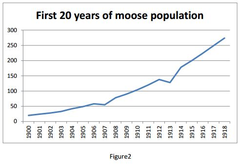

Isle Royale Workbook
Although the wolves arrived on Isle Royale in 1949, the moose arrived much earlier. This workbook will lead you through the process of developing a model of the moose population when it is unaffected by wolves. Although we have no records of moose population prior to 1949, biologists believe that a small herd migrated to the island around 1900, grew to around 500 and leveled off, so let's pretend that this is the graph of moose population in the first half of the 20th century:
Let's start by building a model of the early phase, when the herd was small, food was abundant and hardly any moose died. Here is the target graph, extracted from the one in Figure 1:
That is, you should build a model that makes the following assumptions:
- The population is 20 in the first year (1900).
- Births are the only change in population. Deaths, immigration, and emigration do not occur.
- The number of births each year is... what?
Please open the Dragoon problem and create a model for the moose population as described above.
Your Dragoon problem is incomplete! Please make sure your nodes are finished (i.e. have solid borders) and that you can view the model's graph and table of values.
If you think about how the herd grows, it doesn't make sense that a large herd (e.g., 100 moose) would have the same number of births as a small herd (e.g., 20 moose). The number of births in a year ought to be proportional to the size of the herd that year. That is, in the first year, when the number of births is 4, that represents 20% of the size of the herd. So when the herd is at 100 moose, then 20% of the herd is 20, so about 20 births would occur. This makes much more sense biologically. As the size of the herd increases, the number of female moose of child-rearing age increase, so more moose calves should be born. The graph above confirms our intuition; it does seem that 20 would be pretty close to the number of births when the herd is at 100 moose. So let's try the 20% assumption out in our model. Please open the Dragoon problem and create a model for the moose population as described above.
Your Dragoon problem is incomplete! Please make sure your nodes are finished (i.e. have solid borders) and that you can view the model's graph and table of values.
Although our model matches the moose population for the first 20 years, the model's predictions do not match the actual moose population for the remaining years. Please open the Dragoon problem and create a model for the moose population as described above. This contains the same model as you just completed, but the time span has been change from 20 years to 50 years. Click on "Graph". When you have studied the graphs, DO NOT close Dragoon because you will need to edit the model in a moment. Just return to reading this section.
Your Dragoon problem is incomplete! Please make sure your nodes are finished (i.e. have solid borders) and that you can view the model's graph and table of values.
The assumption “No deaths occur” might be reasonable for the first 20 years but clearly it is not reasonable for longer periods. Suppose we change assumption 2 to be:
2. Two moose die each year.
This is simple, but it has the same problem as our first model of births. As the herd gets larger, the number of deaths per year should get larger. So let's consider changing assumption 2 to be:2. 5% of the moose die each year.
This seems reasonable. One moose dies in the first year when the herd is at 20; when the herd reaches
100, then 5 moose die. This seems more plausible intuitively than having a fixed number of moose die each year.
Please return to Moose population 3, the model you just viewed. If you have closed it, then reopen it. Create a model of the moose population that includes both births and deaths. When you have completed the model and viewed the graphs, return to here.
Your Dragoon problem is incomplete! Please make sure your nodes are finished (i.e. have solid borders) and that you can view the model's graph and table of values.
Given some more facts about moose behavior, we can solve this mystery. As we read earlier, the moose eat trees such as balsam fir. It's a small island, so there are a limited number of trees. If the moose population gets too big, then they strip the lower branches bare during the first few months of winter and there is little food left for the rest of the winter. So the larger the moose population, the more moose die from starvation. As the herd gets bigger, eventually the starvation rate equals the birth rate, and the net growth rate is zero. How big would the herd be at this point? From the graph above, it seems that the net growth rate is zero when the herd reaches about 500 moose. So when the population is around 500, the death rate due to starvation equals the birth rate, and the net growth rate is zero. When the population is near 0, then the death rate is near zero so the net growth rate equals the birth rate. To represent this assumption mathematically, we want a formula that equals the birth rate when population is 500, and it equals 0 when the population is 0. And we want the formula to be simple. So here it is:
Moose death rate = moose birth rate*(moose population / 500)
When the moose population is 500, the quantity inside the parentheses is 1, so the death rate and birth rate are equal, so the net growth is zero and the population is stable at 500, this occurs around 1945 and onwards. When the population is near 0, then the death rate is near zero, so the net growth rate is equal to the birth rate, this occurs around 1900.
We are just about ready to create a model, but one detail remains. Scientists do not like arbitrary numbers, such as 500, in their models, so they give them a name that conveys the number's function in the model. In this case, the ecologists use the name "carrying capacity" for the 500. It represents the size of the moose population that the Isle Royale can "carry" stably. On a smaller island, the carrying capacity might be 200 moose. The carrying capacity for snowshoe hares on Isle Royale might be 1050. So carrying capacity varies with the species and the environment. By naming the constants in the model, scientists have created a convenient new concept that can now be explored further.
Whenever you are considering putting a numerical constant into your Dragoon model, please create a fixed value node instead, and give it a name that conveys the function of the constant in your model. This is good scientific practice. Thus, a better formulation of the above equation is:
Moose death rate = moose birth rate * (moose population / carrying capacity)
Please open the problem below. This contains the model that you just created, which includes both births and deaths of the moose. Please modify it to include carrying capacity. When you have completed the model and viewed the graphs, return here.
Your Dragoon problem is incomplete! Please make sure your nodes are finished (i.e. have solid borders) and that you can view the model's graph and table of values.
Wolves are just like any other animal species in that there are only four general ways that their population can change: births, deaths, immigration and emigration. On Isle Royale, immigration and emigration are nearly zero, so only births and deaths need to be modeled. In this respect, the wolves are just like the moose. Thus, the wolf population model can have assumptions similar to the ones stated earlier:
- The wolf population is 2 in the first year (1950).
- Births and deaths are the only change in the population. Immigration and emigration do not occur.
- The number of deaths each year is... what?
- the number of births each year is... what?
- The number of wolf births each year is proportional to the number of wolves. Let the number of births per wolf be called the wolf birth rate.
- The number of wolf deaths each year is proportional to the number of wolves. Let the number of deaths per wolf be called the wolf death rate.
Your Dragoon problem is incomplete! Please make sure your nodes are finished (i.e. have solid borders) and that you can view the model's graph and table of values.
Wolf birth rate = effect of predation on wolf birth rate * moose population
The constant, effect of predation on wolf birth rate, indicates how much the birth rate rises as the moose population rises. We can guess at its value. Suppose this constant is really small: 0.75% (i.e., 0.0075). When it is multiplied by the moose population, which is a large number, then wolf birth rate is an intuitively satisfying size. For instance, if there were 500 moose, then the wolf birth rate would be 0.75 (which is 500* 0.0015) , which means that 10 wolves would have about 7 or 8 pups per year.
Now let's consider wolf death rate. On the one hand, it might seem that wolf death rate would be sensitive to the moose population, because when moose become scarce, wolves may starve to death. On the other hand, many wolves are killed by other wolves: estimates range from 14% to 65% of the wolf deaths are due to fights amongst wolves. This contribution to the wolf death rate may not be affected by the moose population. Let's just keep the model as simple as possible and assume that wolf death rate does not depend on the moose population. Let's assume it is a constant, e.g.,
wolf death rate = 0.25Now let's consider how the wolves affect the moose population. As mentioned earlier, the only influences on moose (or other animal) populations are births, deaths, immigration and emigration. In the case of Isle Royale, immigration and emigration are nearly zero, so we are looking for ways that wolves can impact either moose births or moose deaths.
Clearly, wolves eat moose, so the more wolves the more moose deaths. This can be simply modeled as
moose death rate = effect of wolves on moose * wolf population
Because the constant effect of wolves on moose is going to be multiplied by some large numbers, and we don't want moose deaths to be extremely high, the constant needs to be a small number: 0.3% (i.e. 0.003).
Now let's consider the birth rate of moose. Just like wolves, the nutritional condition of a female moose determines how many children (called calves) she will have that year. A healthy female moose may have one or two calves. A half-starved one may have none. However, moose eat vegetation, so the moose nutritional condition does not depend on the wolf population, and hence the moose birth rate does not depend on the wolf population. Thus, for simplicity, let us assume
moose birth rate = 0.1
As shown on the graph below for 1959, the moose population should start at 500 and the wolf population should start at 20. Please open the Dragoon problem below.
Your Dragoon problem is incomplete! Please make sure your nodes are finished (i.e. have solid borders) and that you can view the model's graph and table of values.
We have now created a model whose predictions come close to matching the actual Isle Royale curves. There are no obvious patterns left to explain, although perhaps the reader can find some non-obvious ones and try modeling them.
During the development of these models, we have touched upon some classic models in biology. The initial model of the moose population produced exponential growth, so such models are called exponential growth models. The moose population with only carrying capacity and not wolf predation is call a logistic growth model, because the curve it produces is a logistic curve. The model we finally produced is a famous early model of predation called the Lotka-volterra model. The Lotka-volterra model lacks the carrying capacity constraint on the moose population, and it often does not match real data well. When carrying capacity is added to the Lotka-Volterra model, then its accuracy improves. Using Author mode in Dragoon, you can try this yourself.
- The only way the moose population changed was via births and deaths.
- The moose births were proportional to the moose population. In particular, the number of moose born each year as 0.2 times the moose population. That is, the moose birth rate was a constant 0.2.
- The moose deaths were proportional to the moose population. However, the moose death rate was not constant. It starts near zero and rises to the moose birth rate as the number of moose approaches the carrying capacity of the ecosystem. In particular, moose death rate = moose birth rate*(moose population / carrying capacity)
If you think about the equation for moose death rate, the term moose population / carrying capacity represents how close the moose are to exhausting the carrying capacity. The more moose, the closer this ratio is to 1. When it finally hits 1, then the moose population stabilizes because moose are dying as fast as they are being born. Now if the deer are also using up the same resource, then perhaps the ratio should be (moose population + deer population)/carrying capacity. That is, when the number of animals that eat balsam fir etc. reaches the carrying capacity then the moose are starving just enough to stabilize the moose population. The deer population should be limited in the same way. That is, when the ratio (moose population + deer population)/carrying capacity reaches 1, then the deer deaths should equal the deer births, and the deer population should stabilized.
This is all fine, but it assumes that moose and deer eat the same amount and that starvation has the same effect on both of them. That assumption is rather implausible. Because we don't know exactly how the deer population effects moose starvation, nor do we know exactly how the moose population effects deer starvation, let us just add parameters (let's call them just P1 and P2 for now) to the model that allow us to try different values for them until we get the model's curves to match the actual system behavior. In particular, let us assume:
Moose death rate = moose birth rate*((moose population + P1*deer population)/carrying capacity)
Deer death rate = deer birth rate*((deer population + P2*moose population)/carrying capacity)
The parameters P1 and P2 are positive numbers, but it isn't clear in advance what they should be, so you
This assumes that in 1900, 20 moose and 2 deer immigrated to Isle Royale.
Build a model for the moose-deer ecosystem
The deer and moose eat similar food, so they are competing for a resource. Intuitively, the two populations interact, but not like the wolves and moose interacted. Thus, we need a new kind of model.If you think about the equation for moose death rate, the term moose population / carrying capacity represents how close the moose are to exhausting the carrying capacity. The more moose, the closer this ratio is to 1. When it finally hits 1, then the moose population stabilizes because moose are dying as fast as they are being born. Now if the deer are also using up the same resource, then perhaps the ratio should be (moose population + deer population)/carrying capacity. That is, when the number of animals that eat balsam fir etc. reaches the carrying capacity then the moose are starving just enough to stabilize the moose population. The deer population should be limited in the same way. That is, when the ratio (moose population + deer population)/carrying capacity reaches 1, then the deer deaths should equal the deer births, and the deer population should stabilized.
This is all fine, but it assumes that moose and deer eat the same amount and that starvation has the same effect on both of them. That assumption is rather implausible. Because we don't know exactly how the deer population effects moose starvation, nor do we know exactly how the moose population affects deer starvation, let us just add parameters (lets call them just P1 and P2 for now) to the model that allow us to try different values for them until we get the model's curves to match the actual system behavior. In particular, let us assume:Moose death rate = moose birth rate*((moose population + P1*deer population)/carrying capacity)
Deer death rate = deer birth rate*((deer population + P2*moose population)/carrying capacity)
The parameters P1 and P2 are positive numbers, but it isn't clear in advance what they should be, so you should find values by trial and error so that the model's predictions fit the “observed” system behavior shown below:
This assumes that in 1900, 20 moose and 2 other deer immigrated to Isle Royale.
Build a mdoel for this moose-deer ecosystem.